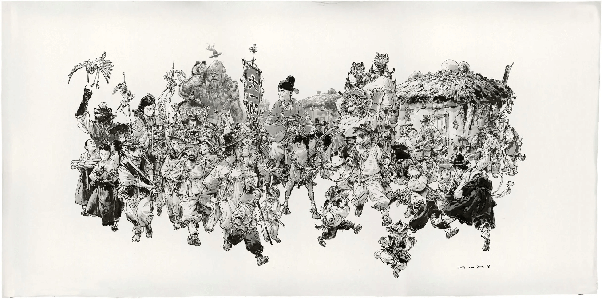

Kim Jung Gi (1975 - 2022)
Mestre das Linhas sem Rascunhos
Bem-vindo à página de tributo a Kim Jung Gi, um artista cujo talento é tão extraordinário que desafia a compreensão convencional da arte. Conhecido por sua capacidade incrível de desenhar sem rascunhos ou referências, Kim Jung Gi é uma verdadeira lenda no mundo das ilustrações e quadrinhos. Neste tributo, exploraremos sua vida, carreira e as impressionantes habilidades que o tornam um dos artistas mais respeitados e reverenciados da atualidade.
A Jornada de Kim Jung Gi: De Coreia do Sul para o Mundo
Nascido em 1975, na cidade de Goyang, Coreia do Sul, desde cedo mostrou um interesse apaixonado pela arte. Sua jornada artística começou na faculdade de Belas Artes da Universidade Dong-Eui, onde ele desenvolveu suas habilidades e começou a atrair a atenção por seu talento excepcional.
Ao longo dos anos, expandiu sua influência internacionalmente, viajando por todo o mundo para compartilhar sua arte e técnicas com entusiastas e artistas aspirantes. Sua obra ganhou destaque em exposições em todo o globo, e seus desenhos detalhados e sem rascunhos desafiam as convenções da ilustração, inspirando gerações de artistas.
Desenhar da Mente de Kim Jung Gi
O que torna Kim Jung Gi verdadeiramente notável é sua habilidade de criar ilustrações complexas diretamente de sua mente para o papel, sem a necessidade de rascunhos preliminares ou referências visuais. Seus desenhos são caracterizados pela precisão impressionante, perspectiva precisa e riqueza de detalhes. Ele é capaz de criar cenas inteiras, repletas de personagens, veículos e cenários, com uma fluidez que parece quase sobrenatural.
Essa técnica de desenho, conhecida como "desenho da mente", é uma manifestação do talento inato de Kim Jung Gi e é uma fonte constante de admiração e inspiração para muitos outros artistas em todo o mundo.
Influência de Kim Jung Gi na Arte Contemporânea
O seu legado na arte contemporânea é indiscutivelmente profundo e duradouro. Sua capacidade de criar obras de arte complexas e envolventes diretamente do pensamento para o papel serviu de inspiração para uma nova geração de ilustradores e quadrinistas. Sua abordagem única da narrativa visual e da representação gráfica redefiniu os padrões da indústria e continuará a influenciar artistas por muitas décadas.
Um Gênio Artístico
Kim Jung Gi foi um artista extraordinário que desafia as barreiras da criatividade e habilidade. Sua capacidade de criar obras-primas sem rascunhos ou referências é uma prova da maestria que ele alcançou em seu campo. Este tributo é uma homenagem ao seu talento excepcional e à inspiração que ele proporciona a artistas e entusiastas de todo o mundo. Que seu legado continue a inspirar gerações futuras a explorar os limites da imaginação e da habilidade artística.
Ficou interessado em saber mais sobre? Visite a Wikipédia (em inglês) para mais detalhes!